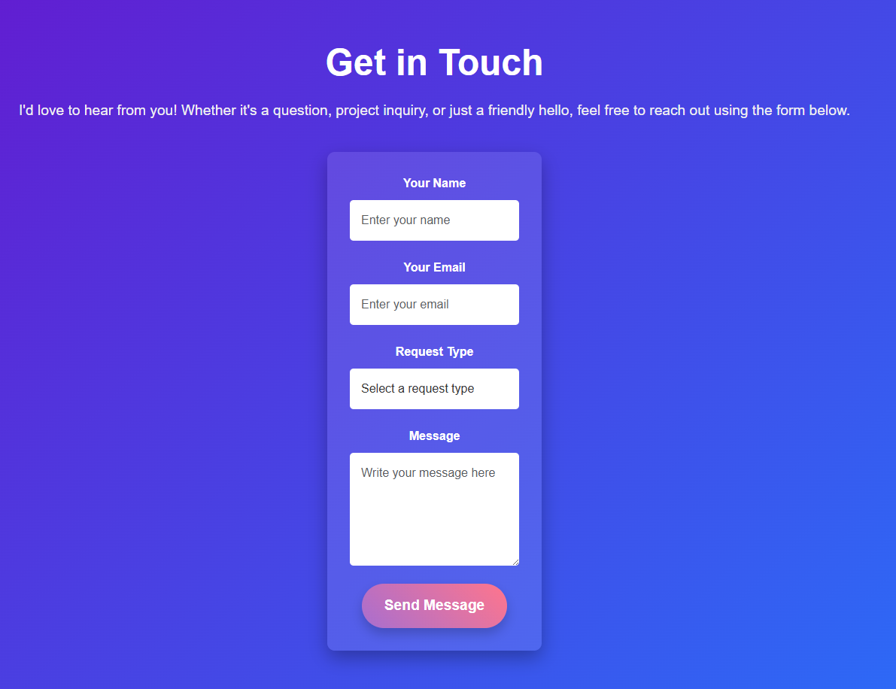
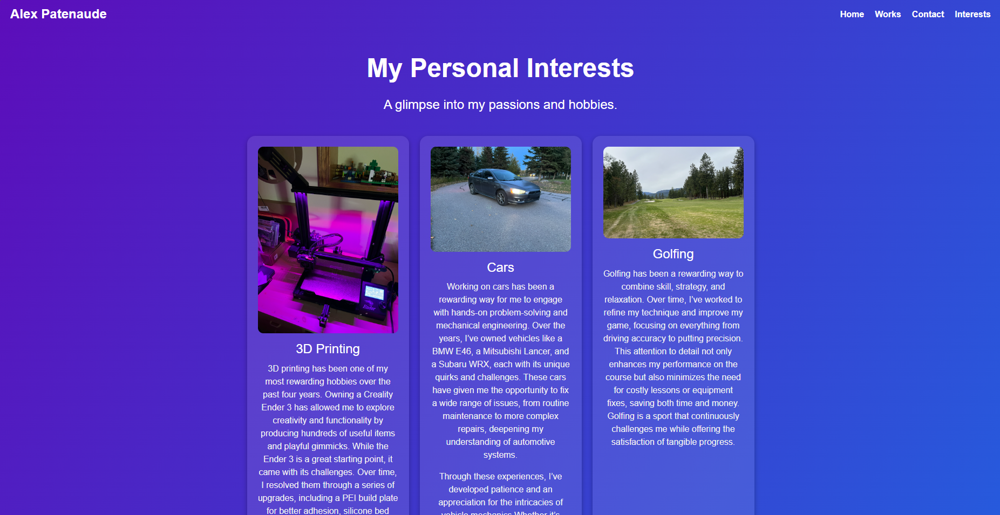
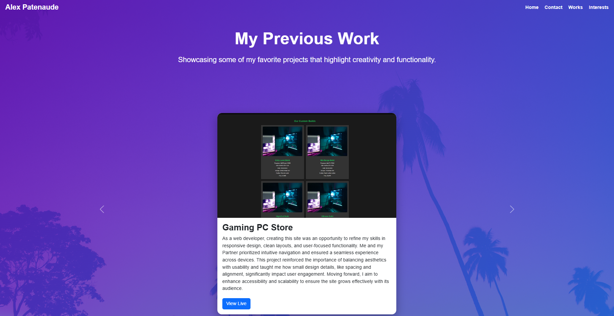
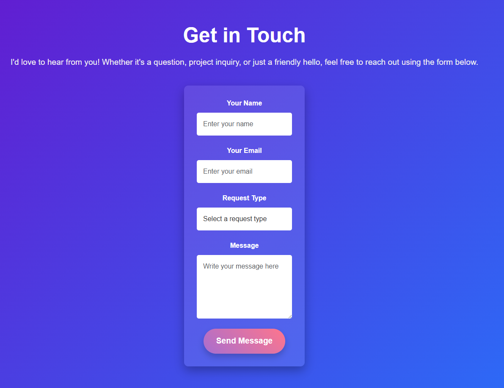
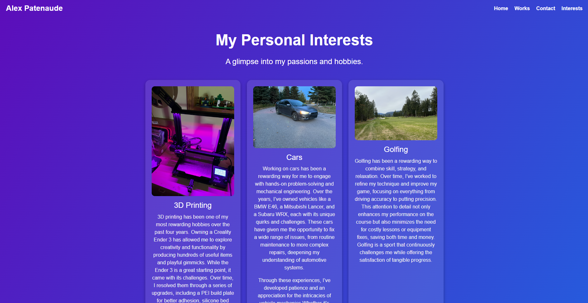
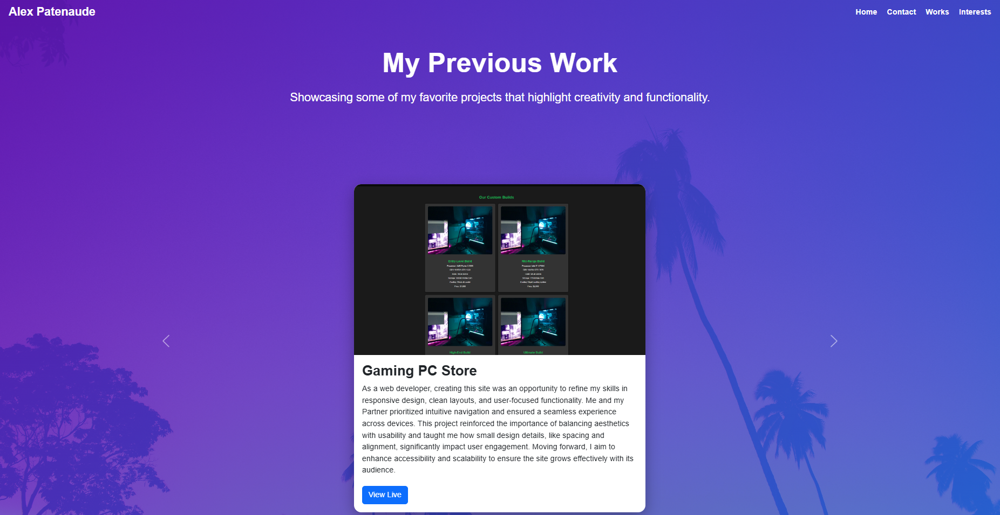
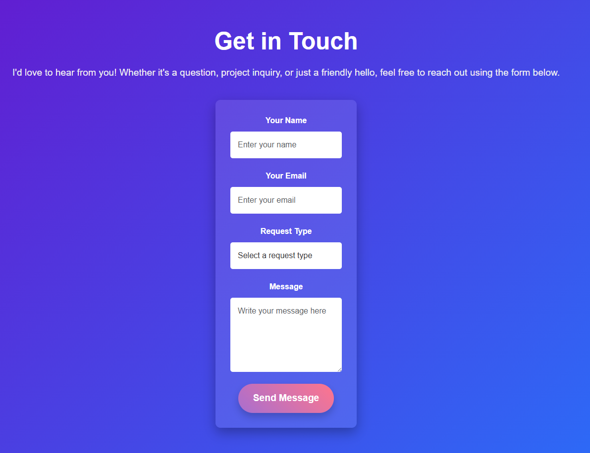
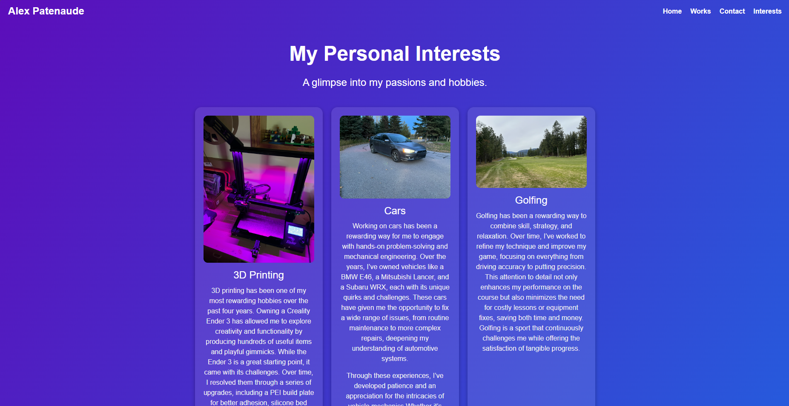
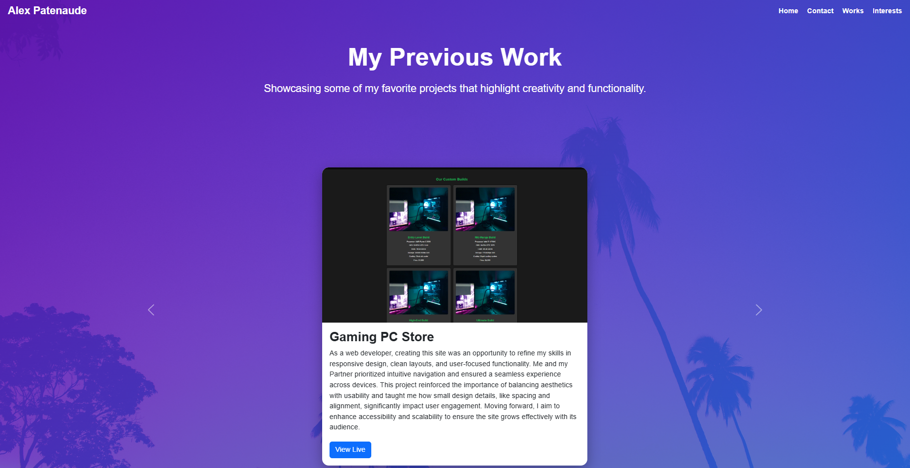

Image Gallery
 





Explore the highlights of my ePortfolio, reflecting my skills and growth as a web developer.
This site demonstrates my ability to design responsive, accessible, and user-friendly web pages using HTML, CSS, and Bootstrap.
Features an intuitive, accessible form with responsive design and custom CSS styling.
Highlights personal hobbies with engaging visuals and responsive interactive elements.
Showcases dynamic content through a responsive carousel, emphasizing user-focused design.



Creating this ePortfolio allowed me to deepen my understanding of modern web development tools and practices. I used Visual Studio Code as my primary development environment, supplemented with extensions like Live Server for real-time previews and seamless testing. This workflow enabled efficient debugging and refinement, ensuring consistent responsiveness and accessibility across devices. Leveraging Bootstrap provided a solid foundation for layouts, while custom CSS allowed me to add unique design elements that reflected my personal style. Techniques like media queries, Flexbox, and Grid were pivotal in creating dynamic, adaptable layouts, while JavaScript was employed for navigation interactivity and animations.
The project challenged me to think critically about design and functionality. Balancing aesthetics with usability required a focus on accessibility, such as implementing high-contrast color schemes, descriptive alt text, and keyboard-friendly navigation. Browser developer tools proved invaluable for diagnosing layout issues and optimizing the design. By incorporating feedback and rigorously testing the site, I learned the importance of iteration in achieving a polished result. This experience not only enhanced my technical skills but also strengthened my ability to create professional, user-centered web solutions that align with modern design principles.